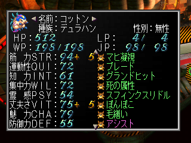

- 레드편에 대하여
- 히어로 변신
- 동료 영입 조건 - 레드편
- 시나리오 공략
- 오프닝 이벤트
- 바카라
- 슈라이크
- 맨하탄
- 크론
- 경
- 신로우
- 안녕히, 키그나스
- 슈우자 타도
- 캠벨 빌딩
- 메탈 블랙 기지
- 신로우 유적의 함정
- 블랙 레이
- 블랙 크로스
레드편에 대하여
시나리오 전체의 난이도는 낮다. 주인공의 레드는 매우 강하고, 거기에 알맞을 만한 강적이 없기 때문이다.
또한, 초반에는 강제 이벤트의 연속이 되어, 행동 제한이 많다. 그래서 진행 중 얼마나 능숙하게 여기저기 돌아다닐 수 있을지가 레드편의 포인트가 된다.
히어로 변신
레드는 '히어로'라는 독자적인 시스템을 가지고 있다. 알카이저(アルカイザー)로 변신할 수 있는 능력을 가지고 있는데, 평상 시에는 휴먼이지만 변신(変身)을 실시하면, '히어로'라는 특수한 종족이 된다.
히어로로 변신하는 조건은 아래와 같다.
- 파티 멤버가 레드 1인
- 레드 이외의 파티 멤버가 메카 종족
- 메카 외 종족의 동료가 <기절, 석화, 수면, 어둠, 마비, 버서커, 혼란, 매료> 등의 상태 이상에 걸려 있을 경우
변신 조건이 엄격하여 변신이 어렵다. 그리고 이벤트로 인해 조건이 만족해도 변신을 할 수 없는 경우가 있다. (반대로 강제 변신하는 이벤트도 있음)
'변신' 커맨드는 퍼스트 트릭(선제 행동)으로 발동한다. '알카아저'로 변신하면, 아래와 같이 능력치가 증폭된다.
최대 HP +250 (동시에 HP 전부 회복), <STR/QUI/INT/WIL/PSY/CHA> +25, VIT +75
기절, 정신 공격에 내성 부가
히어로로 변신하면, 히어로 기술을 번뜩이며, 사용이 가능하게 된다. 다만, 전투 종료 후 능력치 상승 및 술법, 총 기술의 습득을 전혀 할 수 없게 된다. 따라서 변신은 위급할 때만 사용하고, 평상 시는 성장을 위해서 휴먼인 상태로 전투를 하는 것이 좋다.
동료 영입 조건 - 레드편
키그나스에서 내릴 때까지의 이벤트 동료
| 종족 |
이름(K) |
이름(J) |
리전 |
영입 조건 |
| 반요 |
아세루스 |
アセルス |
키그나스 |
습격 시, 대화를 한다 (습격 이후 영구 이탈) |
| 요마 |
백장미 |
白薔薇 |
키그나스 |
습격 시, 대화를 한다 (습격 이후 영구 이탈) |
| 휴먼 |
휴즈 |
ヒューズ |
키그나스 |
습격 시, 강제적으로 동료가 된다 |
| 휴먼 |
루퍼스 |
ルーファス |
키그나스 |
습격 시, 강제적으로 동료가 된다 |
| 메카 |
BJ&K |
BJ&K |
키그나스 |
습격 시, 2층 의무실에서 대화 |
영구 합류할 수 있는 동료
| 종족 |
이름(K) |
이름(J) |
리전 |
영입 조건 |
| 메카 |
BJ&K |
BJ&K |
키그나스 |
습격 이벤트 종료 후, 2층 의무실에서 대화 |
| 휴먼 |
루퍼스 |
ルーファス |
크론
or
슈라이크 |
애니가 동료로 있을 때 대화
or
룬 수집 시, '무왕의 고분'에서 대화 |
| 휴먼 |
라이자 |
ライザ |
크론 |
애니가 동료로 있을 때 대화 |
| 휴먼 |
휴즈 |
ヒューズ |
맨하탄
or
IRPO |
패스트 푸드점에서 대화
or
카드 수집 시, IRPO에 간다 |
| 휴먼 |
애니 |
アニー |
크론 |
키그나스에서 내린 후, 대화
or
룬 수집 시, 대화를 한다 |
| 휴먼 |
돌 |
ドール |
신로우 |
키그나스에서 내린 후, 대화 |
| 메카 |
래빗 |
ラビット |
경 |
키그나스에서 내린 후, 대화 |
| 메카 |
특수 공작차 |
特殊工作車 |
슈라이크 |
키그나스에서 내린 후, 대화 |
| 요마 |
사일런스 |
サイレンス |
루미나스 |
온블에 있는 '사일런스의 그림자'와 대화 |
| 몬스터 |
코튼 |
コットン |
슈라이크 |
'생명과학 연구소'에서 구출 |
| 몬스터 |
제왕 |
済王 |
슈라이크 |
'제왕의 고분'에서 쓰러뜨리고 "동료로 한다"를 선택 |
| 휴먼 |
루쥬 |
ルージュ |
루미나스 |
발착장에서 대화 |
| 휴먼 |
겐 |
ゲン |
스크랩 |
카드 수집 시, 크론에서 겐의 소문을 듣는다 |
| 휴먼 |
류트 |
リュート |
스크랩 |
술집에서 대화 |
| 휴먼 |
에밀리아 |
エミリア |
바카라 |
카드 수집 시, 노움을 쫓아서 동굴에 들어간다 |
| 휴먼 |
페이온 |
フェイオン |
탄자 |
대화에서 "협력한다"를 선택 |
| 몬스터 |
슬라임 |
スライム |
탄자 |
'활력의 룬' 입수 후, 동료가 된다 |
| 몬스터 |
썬더 |
サンダー |
요크랜드 |
류트가 동료로 있을 때 대화 |
| 요마 |
시간의 군주 |
時の君 |
시간요마의 리전 |
시술의 자질을 진행하고, 동료로 받는다 |
| 몬스터 |
기린 |
麒麟 |
기린의 공간 |
공술의 자질을 진행하고, 동료로 받는다 |
| 몬스터 |
주작 |
朱雀 |
무스펠니블 산 |
1. 방패의 카드 입수 이벤트 진행
2. 무스펠니블 산의 입구 부근에서 여성 요마의 심볼과 전투하여 쓰러뜨린다.
3. 산 중턱 부근에서 드물게 출현하는 눈사람(서리의 거인)을 쓰러뜨린다.
4. 이후 동굴로 돌아와서 주작과 대화를 한다. |
| 요마 |
메사루팀 |
メサルティム |
오우미 |
사일런스 이외의 요마 동료가 있을 때, '영주의 관'에서 대화 |
시나리오 공략
오프닝 이벤트
오프닝의 이벤트 전투는 슈우자(シュウザー)를 알카일(アルカール)로 2000 정도의 데미지를 주면, 전투가 자동으로 끝나게 된다.
이후 당분간은 리전쉽 키그나스(キグナス) 내부를 돌아다니게 된다.
처음에는 회계실(会計室)에 들려서 급료를 받자. 여기서는 급료를 이벤트를 해날 때마다 받을 수 있는데 금액은 아래와 같다.
100→150→200→100→250→300→400 크레디트
전망대에 가면, 에밀리아와 렌의 회화를 들을 수 있다. (렌은 여기서만 볼 수 있다. 에밀리아편에서는 사망 상태)
이후 기관실(機関室)에 가서 호크와 대화를 하면, 다음 목적지 <바카라>로 향하게 된다.
바카라
바카라에 도착. 플로어를 돌아다니면서 청전투원(青戦闘員)과 대화를 하다보면, 도망을 간다.
이후 좌측 엘레베이터로 주차창(駐車場)에 간다.
알카이저로 변신한 레드가 블랙 크로스단(ブラッククロス団)과 싸우게 된다.
전투에서는 알카이저의 고유 장비 '레이 블레이드'를 사용하도록 하자. 높은 확률로 대부분의 히어로 기술을 번뜩일 수 있다.
중앙에 있는 곤충계 심볼의 적과 접촉하면 보스와 전투가 된다.
VS 암 워커 (アームウォーカー)
암 워커와 청전투원×2와 싸운다. 우선은 전투원 2명을 '브라이트 너클' 같은 기술로 먼저 쓰러뜨리자.
남은 암 워커도 '브라이트 너클'로 때린다. 어려운 요소는 없다.
보스전에서 어느 정도 데미지를 주면, 불가사의 공간 트와일라잇 존(トワイライトゾーン)이 발동한다. 이 공간에서는 괴인들의 전투 능력이 3배가 된다. 그래도 원본이 약하기 때문에 전혀 신경쓰지 않아도 좋다.
보스전을 끝내면, 이벤트 클리어
슈라이크
다시 <키그나스>로 돌아온다. 일단 급료를 받으러 회계실에 간다. 그리고 기관실에 대화를 하고, <슈라이크>로 간다.
레드편은 리전간 이동이 자유롭지 않기 때문에 한 번 들린 리전에서는 최대한 많은 모험을 하고 떠나는 것이 좋다.
우선은 슈라이크 북동쪽에 있는 '제왕의 고분'을 탐험하자. 여기의 진행은
제왕의 고분을 참조하고, 삼신기를 전부 입수한 상태에서 밖으로 빠져나온다. 물론 획득한 삼신기는 레드의 장비로 유용하게 사용해준다.
다음은 남동쪽의 '생명과학 연구소'에서 몬스터 코튼(コットン)을 동료로 한다. 다만, 여기서 코튼을 동료로 하면, 돌(ドール)과의 회화 이벤트를 볼 수 없게 된다. (이벤트만으로 동료 플래그는 그대로 남는다) 진행은
생명과학 연구소을 참조
이후 슈라이크 중앙에 있는 거리로 가서 공원에 있는 꼬마와 대화하면, 블랙 크로스단의 전투원이 나타난다.
VS 전투원 (戦闘員)
녹 /흑 전투원들과 전투가 시작된다. 이 전투에서는 다른 사람들이 보고 있기 때문에 정체를 밝힐 수 없는 레드는 알카이저로 변신할 수 없다. 이전에 휴먼 상태에서 육성을 안 했다면 고생할 수 있으나, 삼신기 중 '진혼의 곡옥'의 고유 기술 '성가'를 사용하면, 이길 수 있다.
전투 종료 후, 전투원이 아이를 납치한다. 위치는 '제왕의 고분'.
추적을 한 레드는 알카이저로 변신하여 전투를 한다.
VS 스핑크스 (スフィンクス)
스핑크스와 녹 전투원 2명과의 전투다. 이번에는 알카이저로 변신했기 때문에 편하게 이길 수 있다.
스핑크스는 랭크 8의 조류계 적인데, '스핑크스 리들'이나 '강풍' 같은 강력한 공격은 사용하지 않는다. (이벤트용 사양인듯)
'코튼'이 동료로 있다면, 반드시 전투 종료 후에 능력을 흡수하여 '강풍', '성가', '스핑크스 리들' 중 하나를 흡수하면, 앞으로 진행이 편해진다. 특히 '스핑크스 리들'은 특수 변신의 조건으로 이것만 가지고 있으면, 스핑크스로 변신할 수 있다. 나중에 '듀라한'으로 변신하기 전까지 계속해서 써먹을 수 있는 성능이니 반드시 여기서 코튼을 스핑크스로 변신시켜주자.

글쓴이는 코튼을 스핑크스로 변신하고 다음 흡수 때 듀라한으로 변신시켜버렸다. 너무 능숙해도 문제...
전투 종료 후, 레드는 <키그나스>로 귀환하게 된다.
맨하탄
다음 목적지는 <맨하탄>이다. 이번에도 역시 급료를 받는 것을 잊지 말자.
막상 맨하탄에 도착하면, 아무 이벤트도 없다. 곧바로 키그나스에 돌아와보자.
다시 급료를 받고, 기관실에서 유리아와 대화를 하면 조금 긴 회화 이벤트를 진행할 수 있다.
캠벨 빌딩(キャンベルビル)에서 돌아온 레드. 갑자기 해적에게 습격당하게 된다.
기관실에도 적이 와서 전투가 발생한다. 적은 약하기 때문에 문제 없다. (알카이저 변신 불가능)
이 후 휴즈(ヒューズ)와 대화하면, 동료가 된다. 이 앞은 레드편 초반에 있어서 최대의 난관이다. 2층 브릿지로 정면 돌파하여, 보스와 싸우는 방법이 있지만, 이 경우는 이벤트상 게임 오버가 된다. (다 이겼는데 갑자기 게임 타이틀 화면이 나온다...)
따라서 조금 복잡하더라도 기급을 하는 방법으로 진행을 해야 한다.
- 휴즈와 대화 후, 기관실의 우측 파이프를 타고 올라가서 레스토랑에 간다. (왼쪽 문으로 나갔다가 기관실로 들어오면 길을 비켜준다)
- 레스토랑에 있는 3개의 통로 중에서 오른쪽 통로로 나아간다.
- 다음 방으로 이동하고, 화면의 아래쪽 계단으로 올라간다.
- 왼쪽 통로로 이동하여, 남쪽 계단으로 올라간다. (3층)
- 3층 정면의 방에서 루퍼스(ルーファス)를 동료로 할 수 있다.
- 다음은 2층으로 내려와서, 중앙의 방(의무실)에 들어가서 몬스터를 쓰러뜨리고 나갔다가 다시 들어오면, 메카 타입3의 동료 BJ&K를 만날 수 있다. 이후 보스전을 위해서 BJ&K에게 좋은 장비를 몰아줘서 능력치를 올려주자.
- 2층 남쪽 통로로 들어가서 가장 아래에 있는 방에 들어가면, 아세루스(アセルス)와 백장미(白薔薇)를 임시 동료로 할 수 있다.
- 1층 서쪽의 문은 브릿지로 이어진다. 이 통로에서 걷거나 멈추면, 추락하여 게임 오버가 된다. 반드시 달리기로 이동하자.
- 브리짓 기습에 성공하면, 전투가 발생한다.
VS 카모훅 (カモフック)
특별히 데미지가 큰 공격을 하지 않는다. BJ&K의 '압축 레이저포'가 있으면, 쉽게 쓰러뜨릴 수 있다.
도중에 솔저빌×4가 난입한다. 이것은 전체 공격으로 해치우자.
모든 이벤트가 끝나면, 키그나스 습격 이벤트 때 동료가 됐던 캐릭터들은 파티에서 이탈한다. (루퍼스와 휴즈는 나중에 다시 동료가 된다.)
아세루스의 '목음의 로브'는 레어 아이템이므로 '카모훅'과 전투 전에 반드시 벗겨두자.
크론
다음은 <크론>으로 간다. 가기 전에 2층에서 급료를 받고, 의무실에서 BJ&K와 다시 대화하여, 동료로 만든다. 이후 기관실에서 대화하면 <크론>으로 갈 수 있다.
크론에서 블랙 크로스에 관한 정보를 모으는 이벤트를 본다. 이후 북쪽 상가로 올라가면, 예티(イエティ)와 전투가 발생한다. 쓰러뜨린 후, 수상한 남자를 쫓아서 크론의 뒷골목으로 간다. 뒷골목의 진행은
크론 뒷골목을 참조하자.
뒷골목에서는 '자연동굴'로 가는 방향이 아니라, 반대쪽 쉽 발착장으로 가는 길로 진행한다.
마지막 통로에서 북쪽으로 가면, 키그나스에 도착. 이벤트를 클리어할 수 있다.
경
급료를 받은 후, <경>으로 간다.
경 북쪽의 서원(書院)에 간다. 메카 1기가 있는데 대화를 하면, 블랙 크로스의 사천왕(四天王)에 대해 알려준다.
그리고 자동으로 키그나스에 귀환하게 된다.
신로우
급료를 받은 후, <신로우>에 간다.
우선 곧바로 왕궁(王宮)에 간다. 여기서는 가면 무투회에 참가할 수 있다. 시나리오의 변화는 없지만, 재미를 위해서 꼭 참가해보자. 이때는 가면이니까! 알카이저로 변신하여 참가하게 된다.
무투회는 4회 승리하면 우승이다. 적은 약하기 때문에 알카이저라면 간단하게 이길 수 있다. 결승전의 적은 조금 강하다.
VS 가면의 거인 (仮面の巨人)
상당한 공격력을 가지고 있다. 회피 불능의 '뇌염 파워 봄'은 데미지가 많고, 자주 사용한다.
'갓핸드'는 일격만으로 기절할 정도의 위력을 자랑한다. 승리하려면 속공만이 해답.
도중에 지거나, 혹은 우승하면 무투회가 종료된다. 이후 무투회에 참가했으면, 변신한 상태로 혼자서 왕궁 내부를 탐색하게 된다. 불참일 때는 레드의 모습으로 동료와 함께 왕궁을 탐색하게 된다.
입수 가능 아이템 : 결계석, 세라믹 사벨
황색 전투원이 출현하는 방에서 입구 왼쪽의 항아리를 조사하면, 숨겨진 계단이 나타난다.
안으로 들어가서 내려간 바닥이 있는 장소 주변을 조사하면, 바닥이 올라온다. 그 옆에 있는 보물을 조사하면 '세라믹 사벨'을 입수할 수 있다.
더욱 안쪽으로 진행하면 닥터 클라인의 부하가 길을 막고 있다. 싸우자!
VS 고블린 (ゴブリン)
황색 전투원 2명과 같이 싸우는데, 너무 쉽다. 끝
이번에도 전투가 끝나고 키그나스로 강제 귀환하게 된다. (자유가 없어...무슨 영웅이 이 따위야!)
안녕히, 키그나스
이번에도 급료를 받는다. (마지막 급료)
마침내, 레드가 키그나스에서 내릴 결의를 한다. 기관실에서 호크와 대화하면, 작별을 하고 키그나스에서 내리게 된다.
이후 자유행동이 가능해진다. 사천왕들은 강하기 때문에 당분간 서브 이벤트를 하면서 파워업을 시켜두자.
초반 진행의 비법를 진행하면, 좋을 것이다.
슈우자 타도
슈우자의 기지에 관한 정보는 <크론>의 북쪽 상가에 있는 애니(アニー)와 대화하면, 얻을 수 있다. 다시 대화를 하고, "준비 OK!"로 대답하면, 애니가 동료가 된다.
애니가 동료로 있는 상태에서 가게 안에 있는 '루퍼스'와 대화하면, 루퍼스 or 라이자 중 한 명을 동료로 할 수 있다. 이때는 일단 라이자를 선택한다. 나중에 <슈라이크>의 '무왕의 고분'에서 루퍼스를 찾아 동료로 할 수 있다.
다만, 애니를 여기서 동료로 하면, <디스페어>에 갈 수 없어서
서브 이벤트 : 해방의 룬을 진행할 수 없다. '인술의 자질'을 얻고 싶다면, 먼저 룬 수집 이벤트를 진행하도록 하자.
또한, 휴즈도 애니와 같은 이유로 동료로 하면, 무스펠니블의 <빙산>에 갈 수 없어서
서브 이벤트 : 방패의 카드를 진행할 수 없다. '비술의 자질'을 얻고 싶다면, 먼저 카드 수집 이벤트를 진행하도록 하자.
크론 뒷골목으로 간다. 분기점에 도착하면, 애니가 길 안내를 해준다. 파이프를 건너는 이벤트에서 레드의 대사에 주목하자.
사다리를 올라와서 건물로 들어가면, 슈우자의 기지에 도착할 수 있다.
입수 가능 아이템 : 전자활성 갑옷
간단한 구조로, 적을 쓰러뜨리면서 안쪽으로 가면 이벤트 발생 후 보스전이 있다.
VS 사이클롭스 (サイクロプス)
전투 직전의 이벤트의 영향으로 HP가 50% 상태로 시작한다. 우선은 HP 회복을 하자.
사이클롭스는 HP가 매우 높지만, 상태 이상에 취약하고, 스턴에 잘 걸린다. QUI가 높은 캐릭터로 스턴 기술을 사용하게 하면, 노데미지로 이길 수 있다. 또한, 석화나 기절에 내성이 없기 때문에 이걸로 즉사시켜도 좋다.
이후 더욱 안쪽으로 진행한다. 사자 얼굴이 그려진 문 앞에서는 우측 사자상을 조사하면 문이 열린다.
내부에는 슈우자가 기다리고 있다. 강적이니 조심하자.
VS 슈우자 (シュウザー)
슈우자는 통상 공격, 손톱, 슬라이더 스파이크, 회전 공격, 회오리 등을 사용한다.
다만, 비트 방출 시에는 발칸, 방사 화염, 독 가스 등의 기술을 사용한다.
나중에 일대일 승부에 대비하여 레드의 WP/JP를 최대한 아껴두자. 이 시점에서 레드에게 술법 <방패, 활력의 룬, 극기> 등을 장비해놓는 것이 좋다.
슈우자의 HP가 어느 정도 적어지면, 원호 사격을 사용한 뒤 헬리콥터로 도주한다. 이후 레드와 일대일 승부를 시작한다.
첫 턴의 레드는 방패, 활력의 룬으로 방어를 굳히고, 히어로 기술(알・피닉스가 적당)로 데미지를 뽑는다. HP가 적어지면 '극기'를 사용하여 회복하자.
그리고 알카이저로 변신한 레드가 사천왕의 누군가를 한 명 쓰러뜨리면, 전체 회복 기술 '파이널 크루세이드(ファイナルクルセイド)'를 습득할 수 있다.
이후 나머지 사천왕을 타도하러 떠나게 된다.
캠벨 빌딩
<맨하탄>의 캠벨 빌딩으로 간다. 이벤트 이후 빌딩 정상을 목표로 진행할 수 있다.
입수 가능 아이템 : 400, 수격총, 미사일 포드, 핸드 바주카
벽을 타고 올라가서 끝에서 스위치를 조작하면, 내부로 들어간다.
빌 딩 중앙을 빠져나가면, 적이 북적거리는 계단이 나온다. 2층마다 출현하는 적이 무기질, 메카, 식물, 곤충계로 변화한다. 그리고 각 계단의 끝에는 전투원을 동반한 고정 적이 출현한다. 고정 적은 반드시 무엇인가 아이템을 떨어뜨린다.
| 고정 적 |
전리품 |
슬라임 특대
도전투원×3 |
술주 |
건파이터×2
도전투원 |
블랙이글 |
트랩바인
도전투원×3 |
최고 상약 |
암 워커×3
도전투원×2 |
프로텍터 |
이후 최상층에 있는 엘레베이터 걸과 대화에서 잘 먹겠습니다(いただきます)를 선택하면, '전격포'를 입수할 수 있다.
다른 것을 선택하면, '라미아'와 전투가 된다.
다음은 사장실에 도착. 사장은 사라진 상태다. 여기서 검은 옷과 전투가 발생한다.
VS 검은 옷 (黒服)
'기관포', '발칸' 등 탄환계 공격을 사용한다. 방탄 베스트로 경감하거나, '원더 뱅글'로 차단하자.
전투 중 모니터 화면에 캠벨의 얼굴이 크게 비추어지면, '최면 플래시'가 나온다. 또한, 캠벨의 얼굴이 작고 대량으로 비추어졌을 때는 STR/QUI를 상승시키는 엘(エール)이 발동된다.
검은 옷을 쓰러뜨리면, 레드가 알카이저로 변신! 캠벨이 있는 곳으로 향한다. 이후 캠벨의 정체인 블랙 크로스 사천왕 '아라크네'와 대결하게 된다.
VS 아라크네 (アラクーネ)
검은 옷과의 싸움에서 곧바로 싸우게 된다.
전체 공격의 '라이트닝 웨이브'를 주의하자. 위력도 높고, 메카에 스턴 효과를 준다. 전격 속성이므로 '러버 소울'이나 '성설의 망토'로 경감시키는 것도 좋다.
'미니온 스트라이크'도 있는데, 이것은 방패로 막을 수 있다. 따라서 전원에게 방패를 장비해주자.
적은 ECM을 사용하므로, 실탄계 중화기는 전혀 도움이 되지 않는다. 메카는 광선계 중화기나 검으로 공격하자.
'나이트메어', '페로몬'에 의한 수면/매료 상태 이상에 대책으로 요마나 몬스터 동료에게 '매지컬 힐'을 사용할 수 있도록 한다.
전투 종료 후, 몬스터가 능력 흡수를 실시하면 '미니온 스트라이크'를 흡수할 수 있다. 좋은 기술은 아니지만, 오직 아라크네에게서 흡수 가능한 능력이므로 반드시 흡수하여 최대 HP를 높이는데 사용한 것이 좋다.
메탈 블랙 기지
<경>에 도착하면, 크론에서 봤던 수상한 사람이 서원으로 들어간다.
파티에 '래빗'이 있으면, 서원에 들어갈 때 반응을 한다. 벽에 걸린 문장 속으로 들어가자.
입수 가능 아이템 : 300G×2, 사무라이 소드, 최고 상약, 술주, 속 메모리보드
목적은 기지 안쪽에 있는 마약 제조솥이다. 솥 위에 있는 전투원을 쓰러뜨리면, 레드가 폭탄을 장치한다. 그리고 탈출하면 끝.
기지를 탈출하는 것과 동시에 폭발! 그리고 전에 본 기억이 있는 메카가 레드 앞에 나타난다.
이 메카의 정체는 바로 블랙 크로스의 사천왕 '메탈 블랙'!
VS 메탈 블랙(メタルブラック)
몸통박치기, 찌르기, 낙뢰를 사용한다. 낮은 확률로 '문 스크레이버' 또는 '타이거 램페이지'를 사용한다. 등에서 제트를 분사하는 포즈를 취했을 때, '문 스크레이버'를 사용하므로 필요하면 전원 방어시키자.
물리 속성 중심이므로 장비는 내성보다 VIT나 DEF를 우선시킨다. 카운터 기술도 유효하다.
쓰러뜨린 후, 메카에게 데이터 수집을 시키면, '맹호 프로그램'을 흡수할 수 있다.
신로우 유적의 함정
신로우 발착장에 있는 돌(ドール)을 동료로 하고, 북동쪽에 있는 유적으로 들어간다.
입수 가능 아이템 : 정령석, 트윈 소드, 결계석, 250G, 정령은의 갑옷, 정령은의 피어스
유적에서는 <가이아 토드, 발키리, 슬라임>이 길을 막고 있다. 통상보다 HP가 많은 고정 몬스터이므로 조심하자.
그리고 곳곳에 함정이 있는 문이 있다. 이 문을 열려고 하면, 파티 전원이 상태 이상(메카도 포함)에 걸린 상태로 전투가 된다. 여기서 패배해도 이벤트는 계속 진행된다.
유적의 최심부까지 가면, 이전에 무투회의 결승에서 싸운 거인이 있다. 그리고 벨바와 전투!
VS 벨바 (ベルヴァ)
아군의 직접 공격이나 총에 의한 공격은 '스웨이 백'에 의해서 회피당한다.
던지기 기술이나 회피 불능 기술, 중화기, 술법으로 공격을 하자.
벨바가 사용하는 '땅울림'은 고위력이므로, 제트 부츠 같은 부유계 방어구로 무효화시킨다.
나머지 기술들은 단체 대상의 공격이므로, 복수의 회복 기술을 사용할 수 있는 캐릭터를 준비하면 무섭지는 않다.
벨바는 일정 데미지를 받으면, 도주한다. 그리고 전투 결과에 따라서 이벤트가 달라진다.
- 승리했을 경우
- 도주한 벨바를 추적하여, 신로우 왕궁까지간다. 길을 막고 있는 전투원들을 쓰러뜨리고 벨바에 접근하면, 벨바가 왕궁으로 들어간다.
- 안에서 왕비와 대화하면, WP/JP/LP를 회복시켜준다. 이후 투기장에 가면 벨바와 재대결을 할 수 있다.
- 패배했을 경우 (벨바전에서 패배 또는 함정에 걸려서 패배)
- 이벤트 후, 기지를 탈출한다.
- 개조실을 나와서 오른쪽 계단으로 내려가면 감옥이 있는데, 여기에 잡혀있는 동료들이 있다. 구출하고 탈출하자.
- 기지를 나오면 신로우 왕구의 내부다. 안에서 왕비와 대화하면, WP/JP/LP를 회복시켜준다. 이후 투기장에 가면 벨바와 재대결을 할 수 있다.
VS 벨바 (ベルヴァ)
이번은 '스웨이 백' 대신에, '벨바 카운터'를 사용한다. 전의 사양에서 반격이 가능해지므로 매우 조심해야 한다. 다만, 이번에는 총 공격을 막지 못하므로 총으로 공격하는 것이 유효하다.
이번에도 단체 공격 중심의 기술을 사용하고, '땅울림'도 부유 장비로 차단하고 있으니 무섭지 않다.
HP가 높으므로 장기전이 된다고 생각한다. 그러나 회복만 꾸준히 한다면 전멸할 일은 없다.
벨바를 쓰러뜨린 후, 몬스터 능력을 훕수하면 '분노의 철권'을 습득할 수 있다.
그리고 매우 낮은 확률로 '옥토퍼스 보드'를 떨어뜨린다.
블랙 레이
블랙 크로스의 사천왕을 모두 쓰러뜨리면, 키그나스에서 연락이 온다.
<크론/맨하탄/경/신로우>의 쉽 발착장에 가서 담당관의 질문에 "네"라고 대답하면, 키그나스에 갈 수 있다. 다만, 한 번 키그나스에 가면 다시는 돌아올 수 없으니 육성이 더 필요하다면, 아직 출발하지 말자.
그리고 가기 전의 준비로, 파티 전원에게 응시 내성의 장비를 해두고, 레드에게 '알・피닉스'를 습득시켜놓는다.
키그나스의 기관실로 곧바로 가서 호크와 대화를 한다. 그러면 옷을 받아서 키그나스를 떠나 블렉 레이에 잠입할 수 있게 된다.
입수 가능 아이템 : 스프리건 슈트, 무신의 갑옷, 월하미인, 철나막신, 옥토퍼스 보드
잠입 후 당분간은 내부를 돌아다니게 된다. 처음에는 보물 상자를 열어도 내용물을 취득할 수 없다. 일단 블랙 레이의 구조와 보물의 위치를 파악해두고 있자.
나중을 위해 아이템 입수를 원할하게 하고 싶으면, 2F의 엘레베이터를 1F로 내려둔다. 이후 계단을 통해 3F까지 올라가자.
3층의 가장 안쪽 방에 들어가면, 전에 쓰러뜨렸던 메탈 블랙이 있다. 경보가 울리고, 정체가 간파된 레드는 함내에서 도주하게 된다.
이후는 화면이 바뀔 때마다 "블랙 크로스 기지까지 앞으로 ○○○○MM" 라는 메시지가 나온다.
숫자가 8000부터 시작하여, 화면이 바뀔 때마다 1000씩 줄어든다. 그리고 0이 되면, "곧 블랙 크로스 기지에 도착"이라는 메시지로 변한다.
한 번 들어간 방에 다시 들어가면, 메탈 블랙에게 발견되어 전투가 발생한다. 메시지가 바뀌기 전에 메탈 블랙과 전투가 생기면, 승리해도 블랙 레이가 자폭하여 게임 오버가 된다.
따라서, 화면의 표시가 비뀔 때까지 도망다녀야 한다. 그리고 도중 중은 세이브를 할 수 없으니 주의하자.
여기서는 보물을 회수하면서, 안전하게 도망가는 추천 루트를 설명한다.
옥토퍼스 보드를 가지고 싶은 경우
- 엘레베이터를 1F에 내려둔 상태로 3F부터 도망을 시작한다.
- 남서쪽 문으로 들어간다. 여기서 '무신의 갑옷'을 입수한다.
- 남서쪽 문으로 방을 나가고, 통로에서 남동쪽으로 나아간다.
- 앞에 있는 계단으로 내려가서, 1F에 있는 엘레베이터로 2F에 간다.
- 북쪽 문으로 들어가서, '월하미인'을 입수한다.
- 남쪽 문으로 엘레베이터가 있는 방으로 돌아간다.
- 남동쪽 문으로 들어가서, '철나막신'을 입수한다.
- 남동쪽→북동쪽→동쪽 문으로 이동하고, '옥토퍼스 보드'를 입수한다.
- 이 시점에서 메시지가 변하므로, 적당한 방으로 가 메탈 블랙과 전투를 한다.
스프리건 슈트를 가지고 싶은 경우
- 엘레베이터를 1F에 내려둔 상태로 3F부터 도망을 시작한다.
- 남동쪽 문으로 들어간다. 여기서 '철나막신'을 입수한다.
- 남동쪽 문으로 방을 나가고, 통로에서 남서쪽 문으로 나간다.
- 앞에 있는 계단으로 내려가서, 1F에 있는 엘레베이터로 2F에 간다.
- 북쪽 문으로 들어가서, '월하미인'을 입수한다.
- 남쪽 문으로 엘레베이터가 있는 방으로 돌아간다.
- 남서쪽 문으로 들어가서, '무신의 갑옷'을 입수한다.
- 남서쪽→북서쪽→서쪽 문으로 이동하고, '스프리건 슈트'를 입수한다.
- 이 시점에서 메시지가 변하므로, 적당한 방으로 가 메탈 블랙과 전투를 한다.
옥토퍼스 보드와 스프리건 슈트는 동시 입수가 불가능하다. 미리 결정하고 진행하자.
VS 메탈 블랙改 (メタルブラック改)
메탈 블랙改는 첫 턴에 전체 공격의 '문 스크레이버'를 사용한다. 방어를 하거나, 음술의 '섀도우 서번트'로 방어하자.
다음은 레일건, 연장 미사일, 마이크로 미사일, 발칸, 로켓탄 등을 사용한다.
발칸은 '원더 뱅글'로 미사일계 공격은 'ECM'으로 막을 수 있다. 또는 메카의 각종 회피계 기술로 피할 수있다.
HP가 대폭 줄면, '전탄발사'를 사용한다. 이 공격은 데미지가 크기 때문에 반드시 ECM을 가동시켜서 막자.
또한, 낮은 확률로 '자기 폭풍'을 사용한다. 메카계 동료가 위험하니 조심하자.
전투 종료 후, 메카가 프로그램 흡수를 사용하면, '용신 프로그램'을 습득할 수 있다.
블랙 크로스
레드에게 패배한 메탈 블랙은 블랙 레이를 자폭시킨다.
레드는 그 틈에 변신! 동료들도 무사히 블랙 레이를 탈출하여, 블랙 크로스 기지에 간신히 도착한다.
참고로 메탈 블랙改를 레드 혼자서 쓰러뜨린 경우, 대사가 조금 다르다.
기지 내부의 통로는 좁고, 적도 많기 때문에 피해가는 것은 매우 힘들다. 그리고 메탈 블랙과 싸움에서 소비한 WP/JP는 회복하지 않는다. 이때는 다시 파티를 편성하여 2군 파티로 싸우면서, 회복시킬 1군을 대기시키자.
입수 가능 아이템 : 결계석, 최고 상약×3, 술주, 입자가속포, 리설 드라군, 역대, 하이페리온
수령이 있는 장소는 열쇠가 걸려 있어서 열리지 않는다. 또 하나의 문이 있으므로 거기로 들어가자.
여기서 레드는 이전에 납치당한 꼬마와 만나게 된다. 이 꼬마와 대화하면, 블랙 크로스의 열쇠를 받을 수 있다. 다시 대화하면, 파티를 회복시켜준다.
문 안쪽에서는 블랙 크로스의 수령이 기다리고 있다.
VS 블랙 크로스 수령 (ブラッククロス首領)
응시 공격만 막으면, 간단하게 이길 수 있다. '퍼플 아이'나 응시 간파로 막자.
메카 중심으로 파티를 짜는 것도 유효하다.
수령을 쓰러뜨리면, 배후의 인물 '닥터 클라인'이 나타난다. 그리고 전에 쓰러뜨렸던 것이 분명한 사천왕들이 다시 나타난다.
<슈우자, 아라크네, 벨바, 가면의 거인> 중 1명이 출현하고, 3턴마다 바뀐다.
이 전투에서 <슈우자, 아라크네, 벨바 or 가면의 거인> 3명을 쓰러뜨리면 승리할 수 있다.
공격 방법은 이전과 동일하므로 싸우는 방법도 똑같다. 다만, 각각 HP가 증가하고 있을 뿐만 아니라, 3명 연속으로 쓰러뜨려야 하기 때문에 최대 WP/JP가 낮다면, 매우 고생하게 된다. 가능한 낮은 코스트의 기술로 상대하자.
전투 종료 후, 닥터 클리인과 대화를 하기 전에 장비의 정리와 데이터 세이브를 반드시 해둔다. 특히, 응시 내성은 빼먹지 말자. 닥터와 대화하면, 이벤트 후 부활한 메탈 블랙과 또 싸운다.
VS 메탈 알카이저 (メタルアルカイザー)
메탈 알카이저는 6턴 주기로 정해진 공격을 한다.
- 블레이드, 회오리, 썬더 볼
- 글라이더 스파이크
- 타이거 램페이지
- 문 스크레이버
- 다크 피닉스
- 킥
아군도 각각의 공격에 대해서, 싸우는 방법을 바꾸지 않으면 안된다. 전체 공격의 '문 스크레이버'는 당연히 방어나 섀도우 서번트로 방어하고, '타이거 램페이지'와 '다크 피닉스'는 높은 위력을 가지고 있으므로 HP가 적은 캐릭터는 방어나 매지컬 힐을 사용하여 기절하지 않도록 하자. 심술 '은행'으로 숨는 것도 유효하다.
그러나, 이 전투의 최대 목적은 최강의 히어로 기술 '진 알・피닉스'를 번뜩일 수 있다는 것!
메탈 알카이저가 '다크 피닉스'를 사용한 다음 턴에 알카이저가 '알・피닉스'를 사용하면, 반드시 '진 알・피닉스'를 번뜩일 수 있다. 최강의 이름에 어울리는 위력이므로 반드시 번뜩이자.
전투 종료 후, WP 등의 회복을 받는다. 그리고 라스트 배틀!
VS 진정한 수령 (真の首領)
공격력은 다른 주인공의 최종 보스보다 높지는 않다. 알카이저 자신의 전투 능력이 높기 때문에, 상대하기 편하다는 것.
다만, HP는 다른 보스들에 비해 높고, 장기전은 확실하다.
진정한 수령은 일정 데미지를 주면, 파티에 근접하여 공격 형태가 변화한다. 이 공격은 3단계가 있다.
- 1단계
- <수령포, 마비 응시, 매료 응시, 철구, 라이트닝 웨이브, 썬더 볼>로 공격한다.
- 응시는 응시 내성으로 막을 수 있다. 뇌 속성 방어를 위해 '러버 소울' 등을 장비하여 데미지를 경감시킨다.
- 수령포는 반드시 턴 개시 시, 발동하여 2~4발의 연속 공격을 한다. 버틸 수 있을려나...
- 2단계
- <반중력 크래셔, 분노의 철권>을 사용하지만, 별로 위협적인 공격은 아니다.
- 눈이 붉어지면, 그 턴에는 아무 행동도 하지 않는데 이때 5연계를 넣어서 대 데미지를 주자.
- 다만, 그 다음 턴에는 전체 공격의 '저지먼트 X'가 온다. 전원 방어나 '섀도우 서번트'로 막아야 한다.
- '반중력 크래셔'는 술법 취급이므로, 마술의 '사이킥 프리즌'으로 차단할 수 있다. 또는 몬스터 능력의 '사이 리플렉터'로 반사하면, 대 데미지를 주는 것도 가능하다.
- 3단계
- <독가스, 트립 가스, 섬광, 초응시> 등 상태 이상계 공격을 자주 사용한다.
- 전체 공격의 '초응시'는 응시 내성을 달아두면, 무섭지 않다.
- 별로 위협적이지 않은 단계이므로 고생할 일은 없다.
전투에서는 레드의 최강 기술 '진 알・피닉스'와 전체 회복 기술의 '파이널 크루세이드'를 적극적으로 사용하자.
히어로 기술이 충실하다면, 여기서 질 일은 없다.
The END